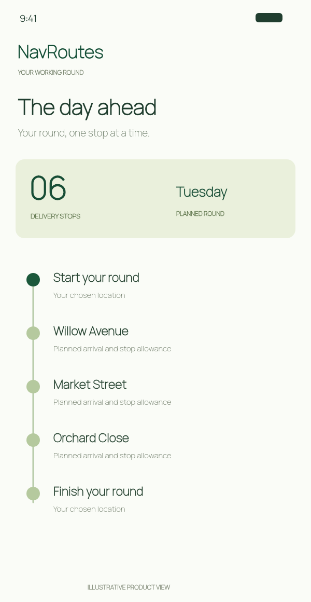
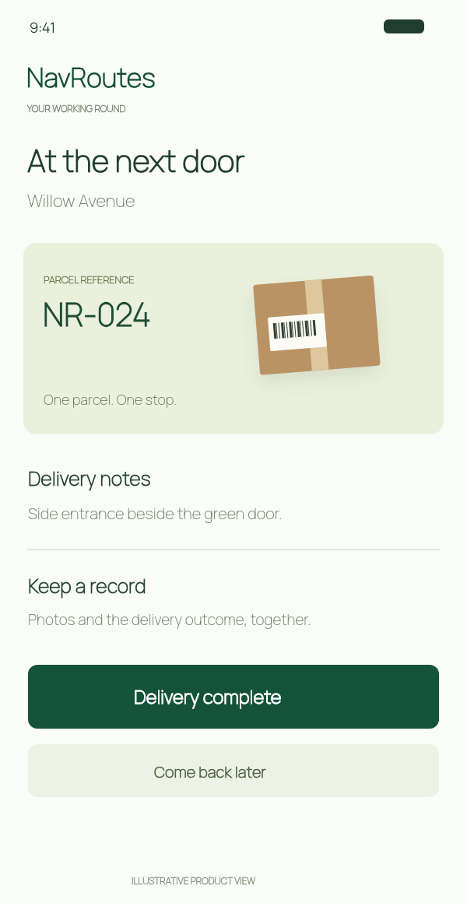

Planeie toda a rota
Adicione um início, paragens de entrega ordenadas e um destino definido. Otimize a sequência novamente quando o plano do dia mudar.

NAVROUTES PARA IPHONE / PARA MOTORISTAS DE ENTREGAS E ESTAFETAS
Menos escrita. Mais entregas.
Transforme documentos de entrega em paragens e dados de encomendas com IA em iPhones compatíveis. Otimize a rota e mantenha notas e fotografias junto de cada paragem.

FERRAMENTAS DE ENTREGA PARA IPHONE
Reúna moradas, referências de encomendas e instruções numa só rota. Organize as paragens, antecipe o dia e mantenha um registo claro de cada entrega.
Ordene as moradas, escolha o início e o destino e volte a otimizar as paragens restantes quando o plano mudar.

Consulte as horas de chegada previstas e reserve tempo para cada paragem antes de partir.

Consulte referências, destinatários e instruções junto da morada. Adicione fotografias de referência e comprovativos de entrega.
Vista ilustrativa da aplicação.
FERRAMENTAS PARA TODA A ROTA DE ENTREGA
O NavRoutes reúne as tarefas práticas de uma rota de entregas, desde a primeira morada até à consulta posterior.
Adicione um início, paragens de entrega ordenadas e um destino definido. Otimize a sequência novamente quando o plano do dia mudar.
Digitalize uma lista de entregas ou escolha a fotografia de uma página. Em iPhones compatíveis, a IA extrai moradas e dados associados para rever antes de importar.
Referências, destinatários, quantidades e instruções acompanham cada paragem. A importação com IA inclui os dados claramente associados no documento.
Consulte chegadas previstas, registe entregas concluídas, falhadas ou adiadas e guarde fotografias das encomendas e das entregas junto da paragem.
Use as indicações do NavRoutes Drive no iPhone ou abra a paragem no Mapas da Apple, Google Maps ou Waze.
Consulte rotas guardadas e exporte relatórios compatíveis em PDF ou CSV no iPhone.
A extração de documentos com IA requer iOS 26 ou posterior, um iPhone compatível com Apple Intelligence, a funcionalidade ativa e um modelo disponível. Reveja os dados antes de importar.
DIGITALIZAÇÃO DE LISTAS DE ENTREGA COM IA
Digitalize uma lista de entregas ou escolha uma fotografia da página. O NavRoutes reconhece o texto e, em iPhones compatíveis, utiliza IA no dispositivo para extrair moradas, destinatários, referências de encomendas e instruções. Reveja os resultados no mapa, confirme as paragens e otimize a rota. Requisitos da digitalização com IA.
A extração de documentos com IA requer iOS 26 ou posterior, um iPhone compatível com Apple Intelligence, a funcionalidade ativa e um modelo disponível. Reveja os dados antes de importar.
APROVEITE AO MÁXIMO O SEU PLANEADOR
Sim. Planeie até 10 moradas no iPhone, incluindo o início e o destino. Consulte as subscrições e os preços locais atuais na aplicação.
Digitalize uma página ou escolha uma imagem. Em iPhones compatíveis, a IA no dispositivo extrai os dados de entrega. Reveja as moradas e os resultados no mapa antes de confirmar.
O histórico das rotas fica no seu dispositivo e não é enviado para o NavRoutes.
A SUA PRÓXIMA ROTA DE ENTREGAS, ORGANIZADA
Descarregue o NavRoutes para iPhone. Digitalize moradas, planeie a rota e mantenha juntos os dados das entregas.